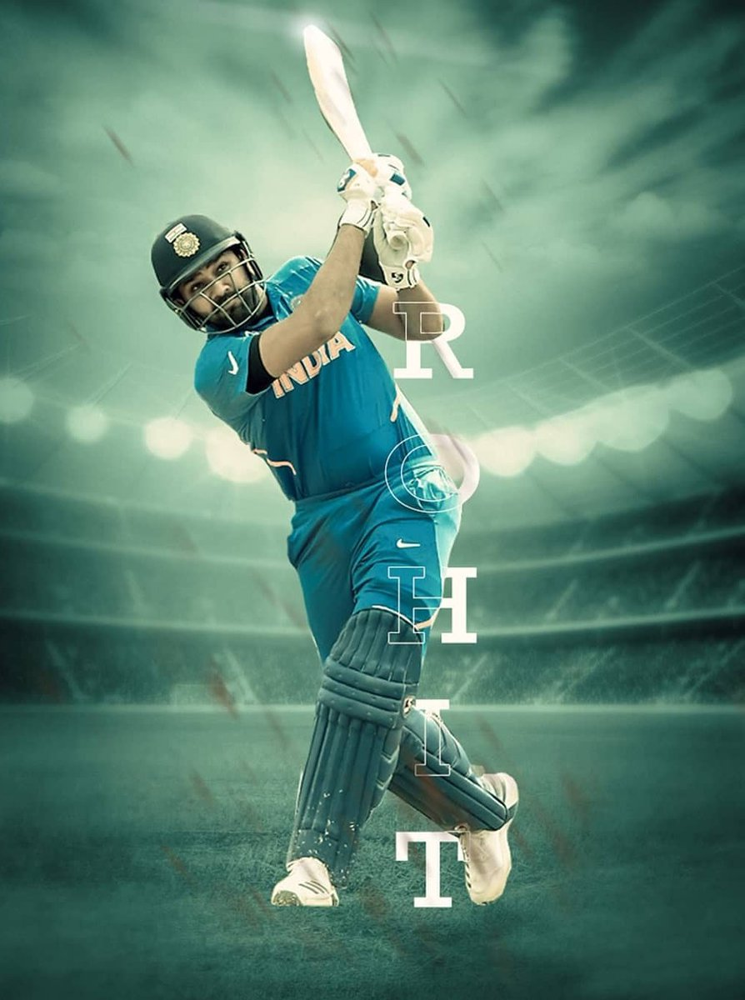

PLAYER
Cricket is a bat-and-ball game played between two teams of eleven players on a field at the centre of which is a 22-yard (20-metre) pitch with a wicket at each end.
TROPHY
The ICC Cricket World Cup Trophy is presented to the winners of the Cricket World Cup. The current trophy was created for the 1999 championships.

GROUNDS
There are no fixed dimensions for the field but its diameter usually varies between 450 and 500 feet (140 and 150 m) for men's cricket.